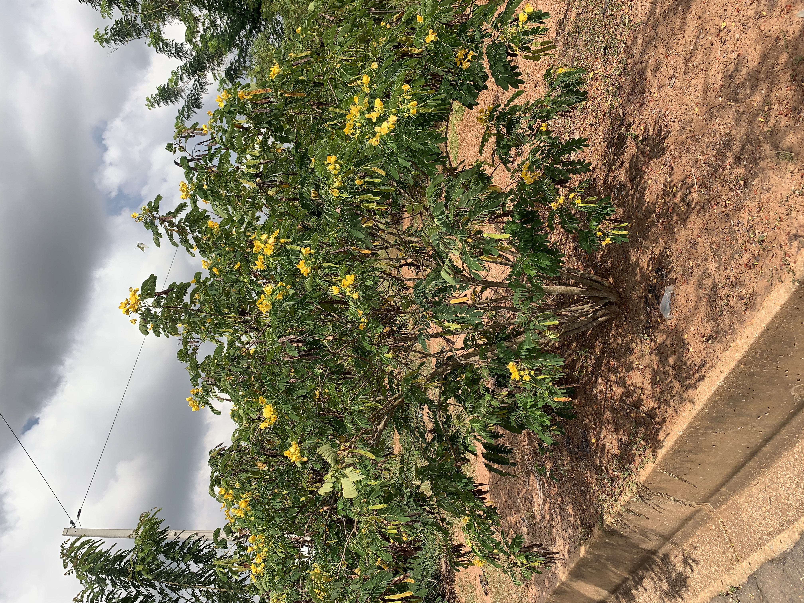

Problème résolu-évolution:
Protéger et disperser au mieux la graine grâce à la fleur et au fruit.
Protéger et disperser au mieux la graine grâce à la fleur et au fruit.
La fleur attire les insectes pour une pollinisation très précise. Après la fécondation, l'ovaire devient un fruit qui protège la graine. Le fruit aide aussi à disperser la graine loin, par les animaux ou par le vent.

Dicotylédones
Fleur, fruit,pollinisation>
par les insecte

